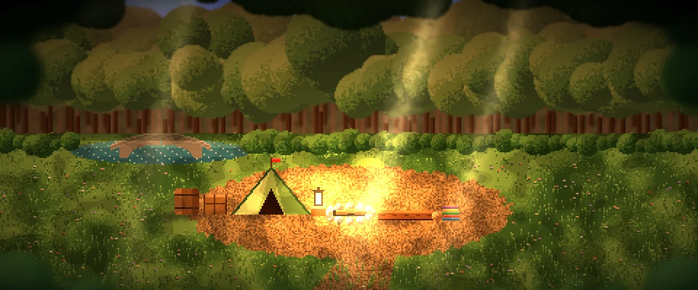
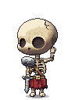
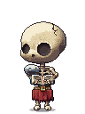
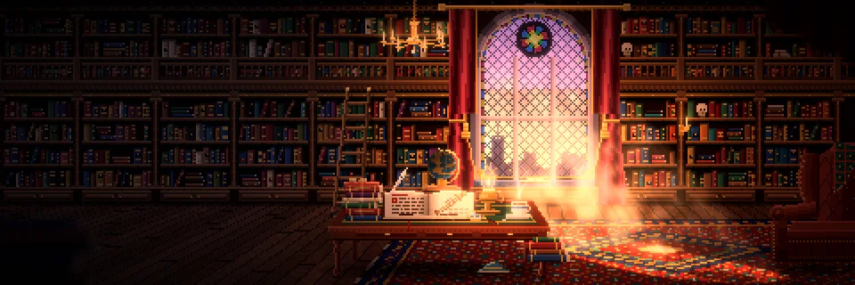
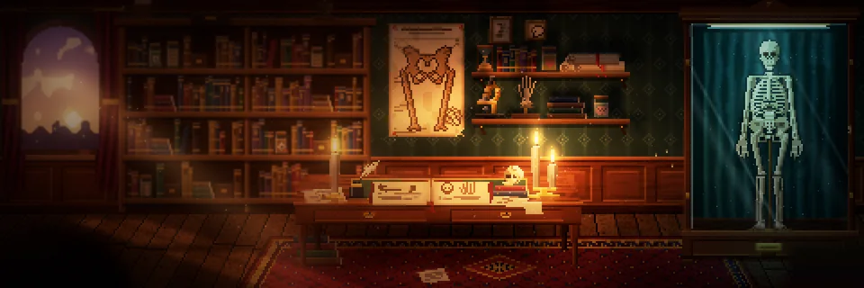
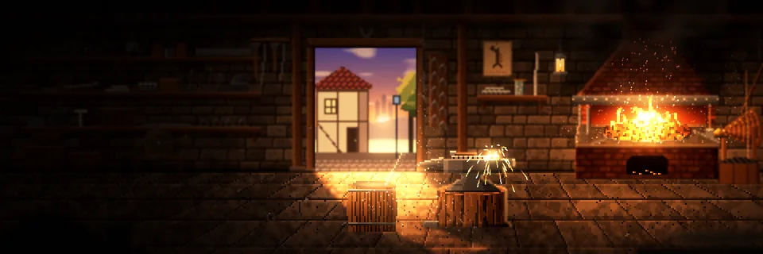
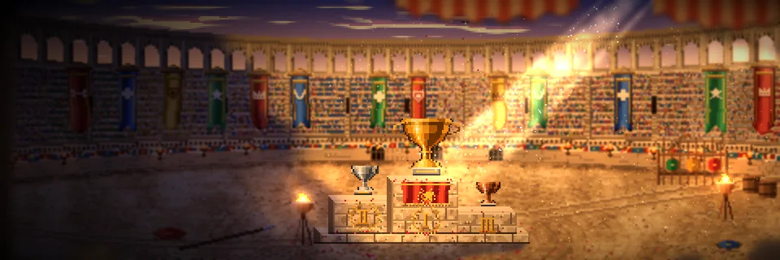

Sexta-feira, 31 de outubro
Boa tarde, Tales.

Pôr do sol · segue o horário Mais 6 questões e a fogueira sobe de nível.
Sequência
Dias seguidos com pelo menos 10 questões.
40 dias
Recorde: 52S
T
Q
Q
S
S
D
Estudar
Treinar por tema14 áreas Revisão30 Flashcards8 vencem Cronograma72 diasLer
Resumos64% lido Atlas 3DNovo Caderno de erros138Acerto por área
Últimos 30 dias
Mais fracaColuna38% · treine primeiro
Mais fortePé e tornozelo82% · mantenha
72 dias
Plano feito48%
Hoje4 de 30 questões
Ritmoem dia
Continue de onde parou
Fraturas do quadrilResumo · 64% lido
Revisão de Mão e punho11 questões · ~8 min
Flashcards de hoje8 cartões
Ranking
Geral · atualiza a cada 10 min
Sua posição
Mais 169 questões#9
e você passa o 8º
- 1MAMarina A.4.873
- 2RTRafael T.4.383
- 3CSCamila S.3.980
Dica do esqueleto
Coluna é a sua área mais fraca.
Dez questões de coluna hoje e o seu acerto geral sobe mais rápido do que em qualquer outra área.
Treinar coluna

ResumosOs capítulos do jeito que cai→
Atlas 3DClique no osso e veja as fraturas→
Caderno de erros138 esperando revanche→
Simulado NacionalA próxima edição→